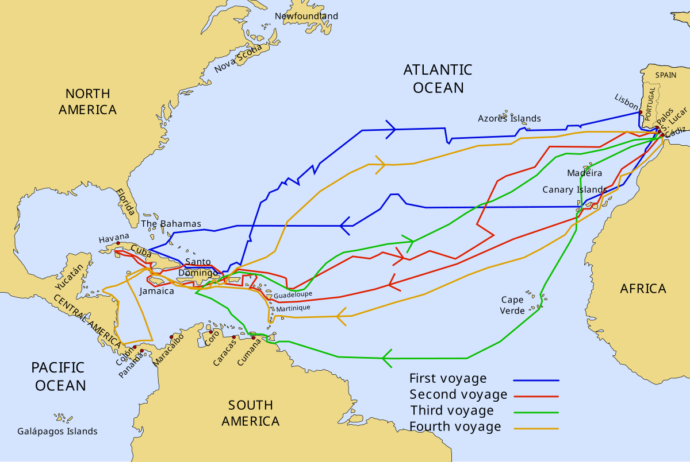
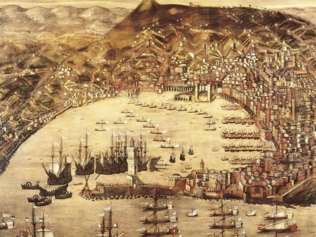
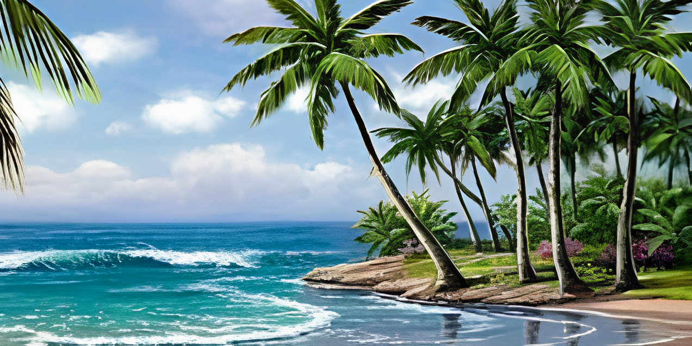
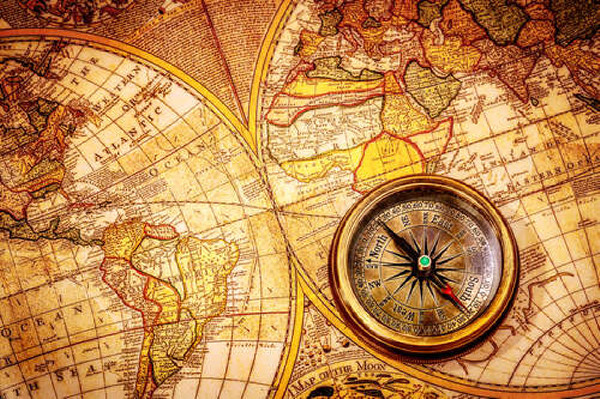

Христофор Колумб — мандрівник, який відкрив новий світ
Христофор Колумб (1451–1506) — італійський мореплавець та дослідник,
який увійшов в історію як першовідкривач Америки. Його експедиції,
організовані за підтримки Іспанії, поклали початок епосі Великих
географічних відкриттів. У 1492 році він перетнув Атлантичний океан і
досяг нових земель, про існування яких європейці тоді не здогадувалися.
Подорожі Колумба назавжди змінили карту світу та уявлення людей про
Землю.

Автори презентації: Ільчук Марк та Красовський Василь.
Ранні роки та становлення

Генуя-Батьківщина Колумба
Колумб народився приблизно у 1451 році в італійському місті Генуя. Його
сім’я була небагатою, батько займався ткацтвом. З дитинства Христофор
проявляв інтерес до моря, кораблів і карт. Він багато часу проводив у
порту, слухаючи розповіді моряків. У молодості працював картографом та
моряком. Він здійснював подорожі Середземним морем, побував у Португалії
та Іспанії. Колумб вивчав праці античних учених і середньовічних
географів. Він був переконаний, що Земля має форму кулі, і мріяв знайти
новий шлях до Азії через захід.
1492 рік — перша подорож
Колумб довго шукав підтримки для свого плану — плисти на захід, щоб
знайти новий шлях до Індії. Португалія відмовила йому, але Іспанія
погодилася. Королева Ізабелла та король Фердинанд надали йому три
кораблі: "Нінья" "Пінта" "Санта-Марія" У серпні 1492 року експедиція
вирушила з порту Паломас. Подорож була важкою: моряки боялися, що вони
не знайдуть землі і загинуть у відкритому океані. Але Колумб вселяв у
них надію та впевненість.
Відкриття нового світу (Америки)

12 жовтня 1492 року після довгих тижнів у морі один з моряків закричав: «Земля!».
Це був острів, що належить до Багамського архіпелагу.
Колумб був переконаний, що він досяг Азії, але насправді це був новий континент.
Згодом він відвідав Кубу та Еспаньйолу (сучасні Гаїті та Домініканська Республіка).
Це відкриття стало переломним моментом в історії: європейці зрозуміли, що перед ними нові землі, повні можливостей та багатств.
Спадщина Колумба

Христофор Колумб здійснив загалом чотири подорожі через Атлантичний океан.
Він відкрив багато островів Карибського моря і частину Південної Америки.
До кінця життя Колумб вважав, що відкрив новий шлях до Азії, і не знав, що насправді виявив новий континент.
Його подорожі стали початком епохи колонізації Америки європейцями.
На честь Колумба названо країну Колумбію, річку Колумбія та багато міст по всьому світу.
Він залишив по собі суперечливу, але величезну спадщину: з одного боку — великі відкриття, з іншого — початок колоніальної ери.